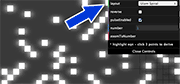
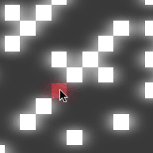

A prime number is a number greater than one that cannot be divided evenly by any numbers except
one and itself.
What we see here is the numbers from 1 to 62,500 laid out in order, where the
prime numbers are bright squares and non-primes ("composites") are dim squares.
As you can see, the grid looks a lot like an office building at night: seemingly random which
windows are lit and which are dark. Yet there are columns free of primes -- our first sign of
order in the constellation of numbers.
Explore the grid:
With the layout control, explore the different arrangements of numbers.

The inspiration for this visualization is the Ulam spiral. The Ulam spiral consists of placing 1 in the center and counting up in a rectangular spiral. See if you can find patterns in the different layouts.
As you can see, some spirals contain strikingly bright diagonals or spiral arms. What
determines which arms are rich in primes and which arms are poor? Why are there
seeming voids free of primes?

To discover an equation that fits a given diagonal or spiral arm, simply select three
squares in a row. A curve ("quadratic polynomial") will be fit to those three numbers and all other numbers on that curve will light up.
Visualize these prime curves across different visualizations. Find a
particularly bright spiral or diagonal--then switch the layout. What happens to a bright
diagonal in an Ulam spiral when you view it as an Archimedean spiral?
What was your best curve? Could you find one with more than 70% primes? What about 80%?
Is there any equation that will gives us a prime every time, for sure?
The nature of numbers and the occurrence of primes is a central problem in a field of mathematics
called "number theory". Very smart people have been working very hard for a very long time--but
the secret of prime numbers remains elusive. There is no efficient equation to generate every prime, or
even to always generate a prime.